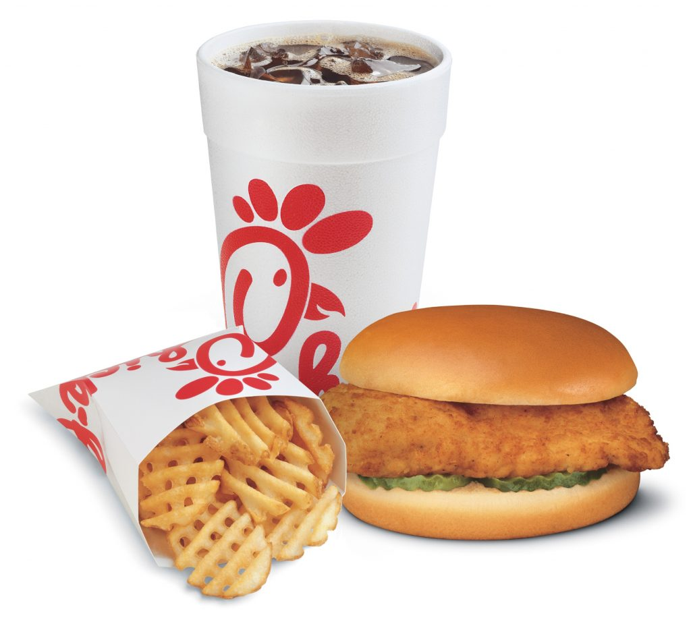
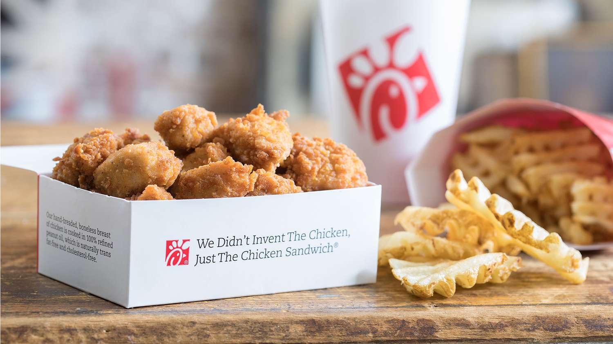
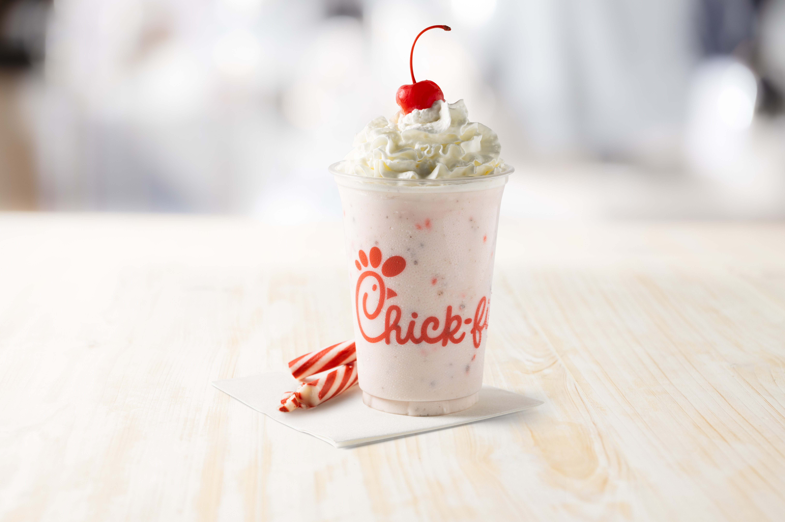
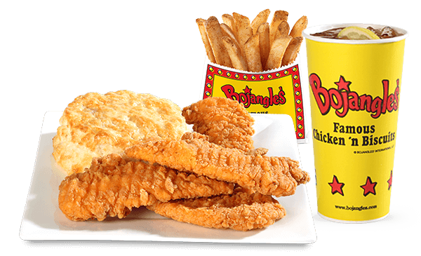
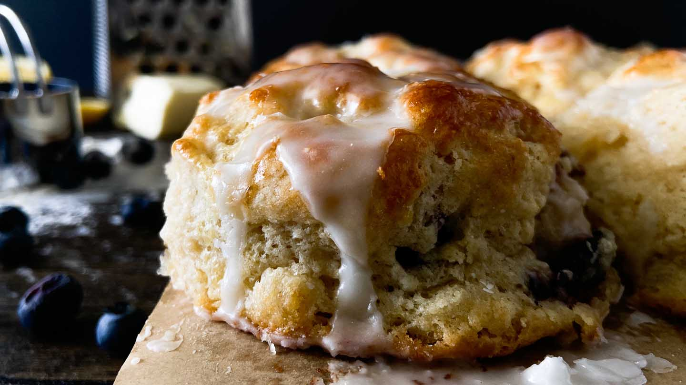
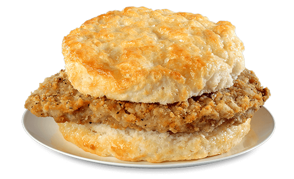
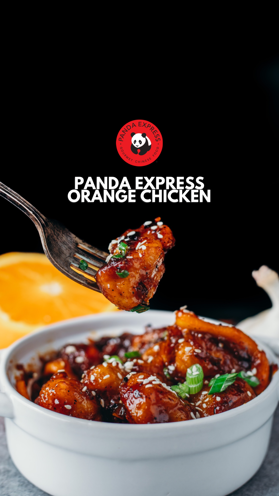
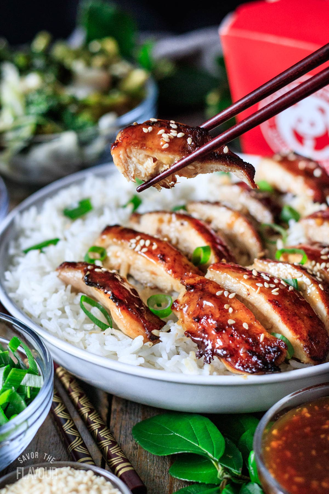
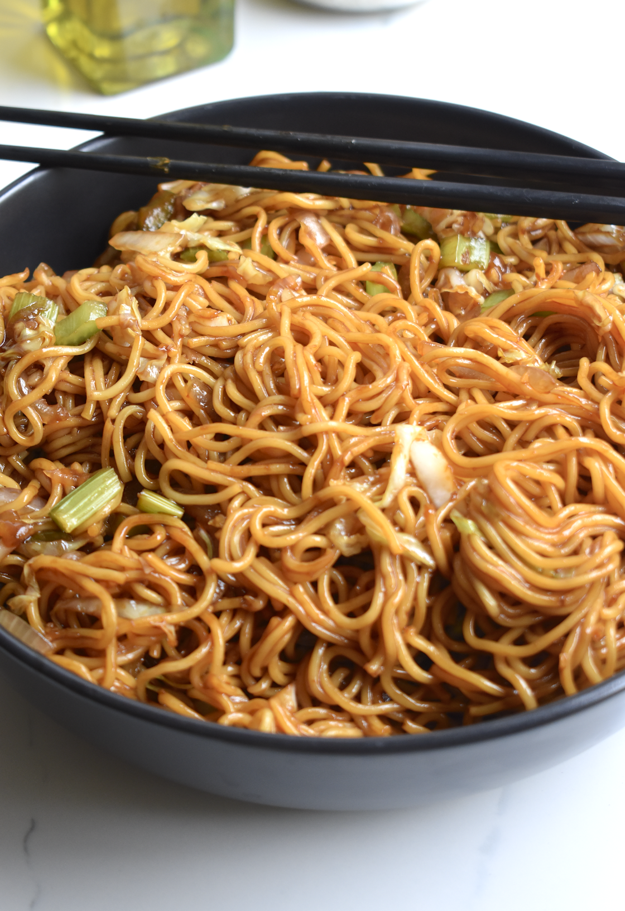

Are you a culinary adventurer in search of the perfect meal on campus? Look no further! We've curated a list of the most exceptional dishes that are sure to tantalize your taste buds. From fresh pizzas to mouthwatering sushi, this list has got you covered. So, put on your foodie hat and let's dive into the delightful world of flavors.
The first restaurant on our list of reccomendations is the Chick-fil-a located at 516 Stirling St Greensboro, NC 27412. The hours for this location are:
Monday - Thursday
7:30 AM-10:00 PM EST
Friday
7:30 AM-8:00 PM EST
Saturday
10:30 AM-6:00 PM EST
Sunday
Closed
If you decide to go to this Chic-fil-a location, we reccomend trying the Chic-fil-a Chicken sandwich combo
Another good thing to try is the Chic-fil-a Nuggets combo
For our final reccomendation from this location, we suggest you try the Peppermint Milkshake
Next we will take a look at another good option for local food at Bojangles on 1501 Spring Garden Street. The hours for this location are:
Monday - Saturday
5:30 AM-10 PM
Sunday
6 AM-10 PM
Luckily for you as the reader you dont have to spend time thinking of what to order, as we have had our finest critic curate a tailored list of reccomendations for you
To begin our list we reccomend you try the Chicken Supremes combo
If that wasn't exciting enough you then you've got to try the Boberry Biscuit
If youre still standing after reading what you've just read then start moving those legs towards your nearest Bojangles and order a Cajun Filet biscuit
Finally, reader, we would like to show you the most highly considered establishment on our list. Panda Express. Panda Express is located on 1209 North Drive, Greensboro, NC and has varying operating hours
If you decide to head over to Panda Express at UNCG we reccomend you try the Orange Chicken
If you're not a fan of orange chicken we suggest you get the Teryaki Chicken instead
For our readers with a lesser developed palette you can always fall back on the Lo Mein, a true classic
